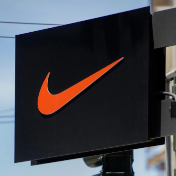
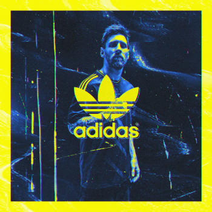

About Us
Founded in the 1980s, Champs Sports became a big name after being started by the company that would be later recognized in the following years as Footlocker. Starting as a specialty store with two other brands by the same company, Champs Sports has become an icon over the decades in sneaker culture, fashion and history. See how our store became recognized with selling top shoe brands like Nike, Reebok and Converse.

Products
Explore the endless amount of sneaker designs that come from top named brands around the world and has shaped our lives (and feet) for a better tomorrow.